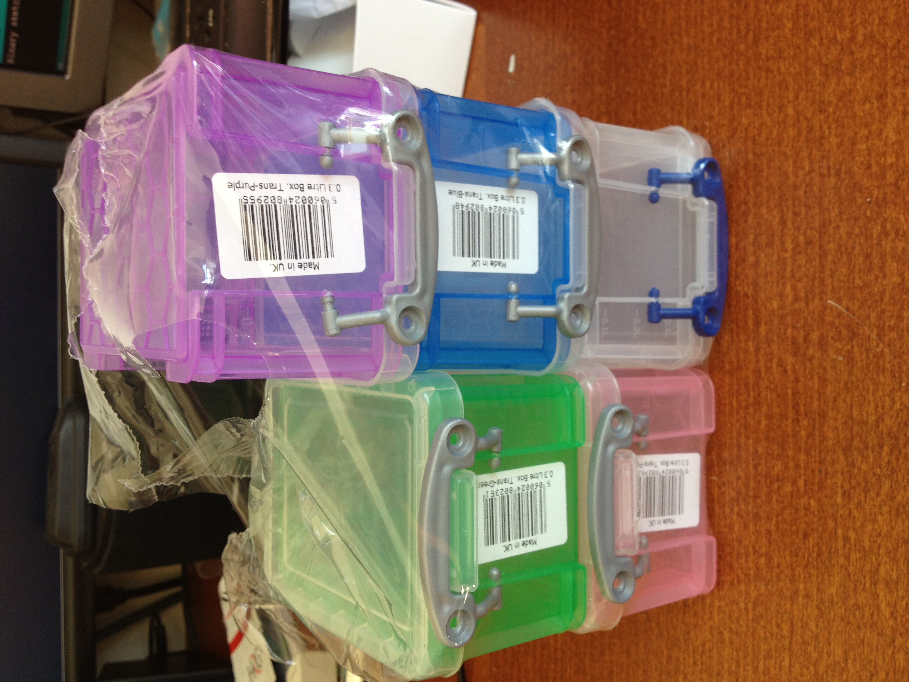
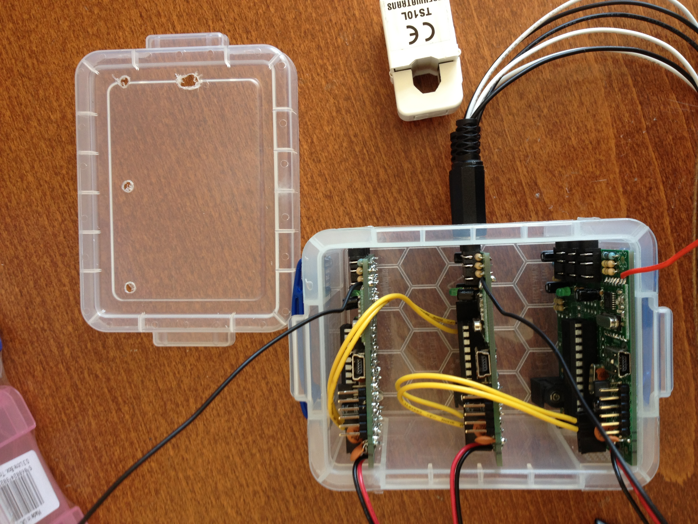
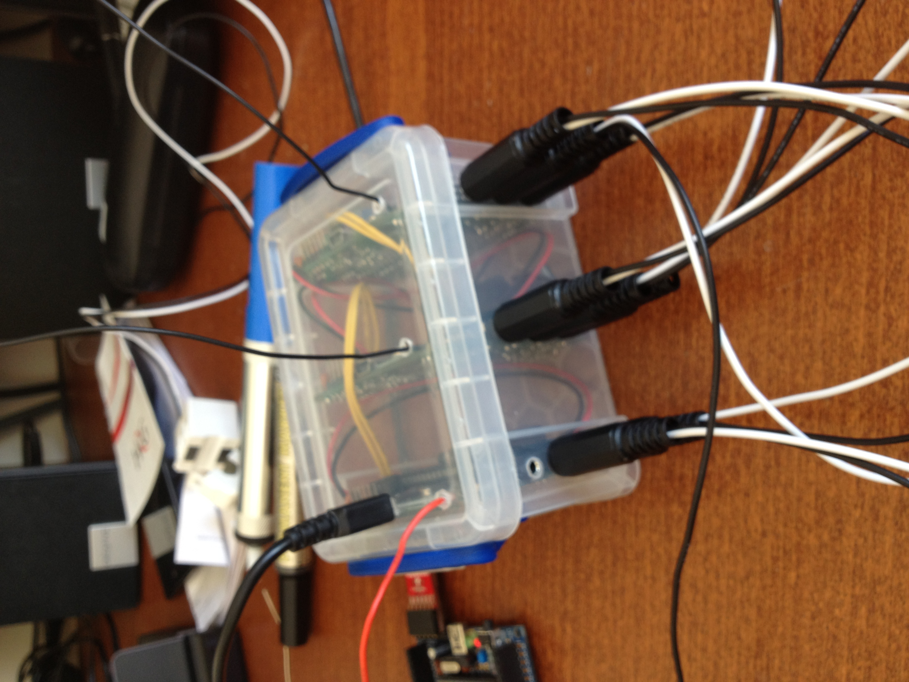

Has anybody got some recent experience of battery life monitoring on TX's?
Most of mine are powered by USB, but Im moving some to battery, and I want to know what to expect.
Im running 3 CT clamps, with readings posted every second.
Im posting the battery voltage as well, so I guess i'll eventually find out myself....
Another question: Best way to power 3 x TX's from one power source?
Is it feasible to 'stack' or power 3 boards from the same source? Ideally batteries again (I understand I might need to put batteries in parallel to provide enough power) or USB ?
Can I get away with using the same 9V AC source if I want to do Real Power monitoring as well?
Re: Battery life / stacking TX's
I can't comment about battery life.
Is it feasible to 'stack' or power 3 boards from the same source? Ideally batteries again (I understand I might need to put batteries in parallel to provide enough power) or USB ?
I assume you are meaning primary cells? I would advise against putting batteries (cells) in parallel. They need to be closely matched in order to discharge at exactly the same rate. If there is any degree of mismatch, one cell may well end up under reverse current from the other (re-charging, in other words) and this can lead to leakage and damage to the surroundings.
If you do power 3 boards in parallel, then in principle I see no reason not to. However, again battery power would be less good because as a cell discharges, its internal resistance increases and so it will be easier for one board to disturb the supply to the others, possibly leading to unwanted 'crosstalk' effects.
Can I get away with using the same 9V AC source if I want to do Real Power monitoring as well?
Again, I can't see a reason why not. You would need only one divider and decoupling capacitor to provide the half-rail bias supply, and one 10:1 (or whatever) divider chain on the output of the p.t. However, I'd be inclined to feed each analogue input via a (relatively) small series resistor (about 1 kOhm) just in case the inputs inadvertently got set as outputs at some stage. (That should not interfere with normal operation but it would prevent damaging overcurrents in case of mis-programming).
Re: Battery life / stacking TX's
In the end, I didnt pursue the battery (primary cells), but did stack a single USB power adaptor to supply 3 TX's.
(I re-purposed a fused spur near where the consumer unit is).
I also found some very nice boxes on Maplin special offer (about £6 for six), that take 3 (or more) TX boards and they just push-fit.


I did think about making them stack properly, using the SIL headers, but wanted to be able to reuse them individually if needed, and therefore avoided soldering sockets on the bottom of the PCB.

This nice little box now has data for one half of my house (9 circuit breakers) pushing to COSM and OPEN.SEN.SE.
Ive got to see if I can get easy access to the other consumer unit....